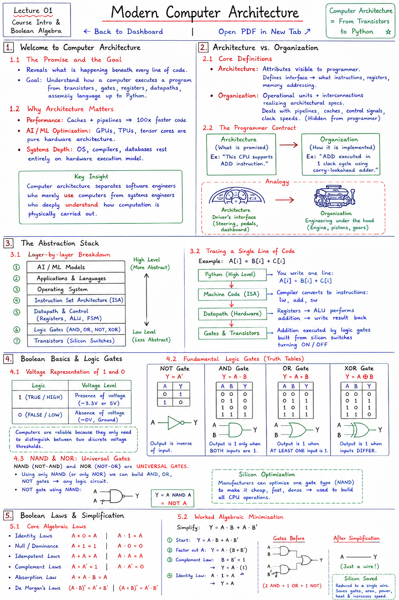

Short Notes & Visual Summary
Handwritten / quick summary notes for Lecture 01:

Click image to open high-resolution version in new tab
Welcome to Computer Architecture
1.1 The Promise and the Goal
Computer Architecture is the course that reveals what is happening beneath every line of code you have ever written. By the end of this course, you will understand from the ground up how a computer actually executes a program—moving beyond vague explanations to trace instructions directly from transistors, through logic gates, registers, and datapaths, up to assembly language and Python.
1.2 Why Architecture Matters
Understanding the hardware layer is critical for several reasons:
- Performance: Knowing how caches and pipelines work is the difference between writing slow loops and code that runs 100x faster.
- AI / ML Optimization: GPUs, TPUs, and tensor cores are pure hardware architecture. You cannot optimize neural network execution without understanding the underlying hardware constraints.
- Systems Depth: Fields like operating systems, compilers, and databases rest entirely on the hardware execution model.
Computer architecture separates software engineers who merely use computers from systems engineers who deeply understand how computation is physically carried out.
Architecture vs. Organization
2.1 Core Definitions
Computer design is split into two complementary fields:
- Computer Architecture: Refers to the attributes of a system visible to a programmer. It acts as the interface—defining what instructions a CPU offers, what registers are available, and how memory is addressed.
- Computer Organization: Refers to the operational units and their interconnections that realize the architectural specifications. It acts as the implementation—dealing with pipelines, caches, control signals, and clock speeds, all of which are hidden from the programmer.
2.2 The Programmer Contract
Architecture defines the programmer's contract. For example, a contract specifies: "This CPU supports an ADD instruction." Organization describes how that instruction is physically implemented: "The ADD is executed in 1 clock cycle using a carry-lookahead adder."
Think of computer architecture as the driver's interface in a car (steering wheel, pedals, dashboard metrics), while organization represents the engineering under the hood (engine pistons, fuel injection systems, transmission gears).
The Abstraction Stack
3.1 Layer-by-layer Breakdown
Computing is managed through a layered stack of abstractions, where each layer hides the implementation details of the layer below it:
- AI / ML Models: Neural networks and training algorithms.
- Applications & Languages: Python programs, C++ source code.
- Operating System: Coordinates processes, memory management, and file systems.
- Instruction Set Architecture (ISA): The CPU's vocabulary (machine instructions).
- Datapath & Control: Registers, Arithmetic Logic Units (ALUs), and Finite State Machines (FSMs).
- Logic Gates: AND, OR, NOT, XOR gates.
- Transistors: Physical silicon switches.
3.2 Tracing a Single Line of Code
Let's trace how the statement A[i] = B[i] + C[i] travels down the abstraction stack to the physical silicon:
- Python: You write one line:
A[i] = B[i] + C[i]. - Machine Code: The compiler converts it into instructions like load-word (
lw), addition (add), and store-word (sw). - Datapath: Registers feed data into the ALU, which performs the addition and writes the result back.
- Gates & Transistors: The addition is executed by gates constructed from silicon switches turning on and off.
Boolean Basics & Logic Gates
4.1 Voltage Representation of 1 and 0
At the physical layer, everything is represented by two values:
- 1 (TRUE / HIGH): Represents the presence of voltage (e.g., ~3.3V or 5V).
- 0 (FALSE / LOW): Represents the absence of voltage (~0V, or ground).
Computers achieve high reliability because they only need to distinguish between these two discrete voltage thresholds.
4.2 Fundamental Logic Gates
The core gates are described completely by their truth tables, which specify outputs for all input combinations:
- NOT Gate: Output is the inverse of the input.
Y = A' (NOT A)
- AND Gate: Output is 1 only when BOTH inputs are 1.
Y = A · B
- OR Gate: Output is 1 when AT LEAST ONE input is 1.
Y = A + B
- XOR Gate: Output is 1 when the inputs DIFFER.
Y = A ⊕ B
4.3 NAND & NOR: Universal Gates
NAND (NOT-AND) and NOR (NOT-OR) gates are **universal gates**. This means that using only NAND gates (or only NOR gates), you can build AND, OR, and NOT gates—and therefore any logic circuit whatsoever.
For example, a NOT gate can be constructed using a single NAND gate by tying its inputs together:
NOT A = A NAND A
Universal gates are a major advantage for silicon manufacturing. Fabrication plants can focus on optimizing a single gate type (like NAND) to make it extremely cheap, fast, and dense in silicon, using it to construct all CPU operations.
Boolean Laws & Simplification
5.1 Core Algebraic Laws
We use algebraic laws to simplify logical expressions, reducing the number of physical gates required to implement a circuit:
- Identity Laws: A + 0 = A | A · 1 = A
- Null / Dominance Laws: A + 1 = 1 | A · 0 = 0
- Idempotent Laws: A + A = A | A · A = A
- Complement Laws: A + A' = 1 | A · A' = 0
- Absorption Law: A + A · B = A
- De Morgan's Laws: (A · B)' = A' + B' | (A + B)' = A' · B'
5.2 Worked Algebraic Minimization
Let's simplify the expression Y = A · B + A · B' using these laws:
- Starting expression:
Y = A · B + A · B' - Factor out A (Distributive Law):
Y = A · (B + B') - Apply Complement Law (B + B' = 1):
Y = A · (1) - Apply Identity Law (A · 1 = A):
Y = A
We started with two AND gates, one OR gate, and an inverter. By simplifying the expression, we reduced it to a single wire (Y = A), saving physical gates, reducing heat output, and speeding up circuit execution.
Original PDF Notes
Below is the original PDF document for your reference: